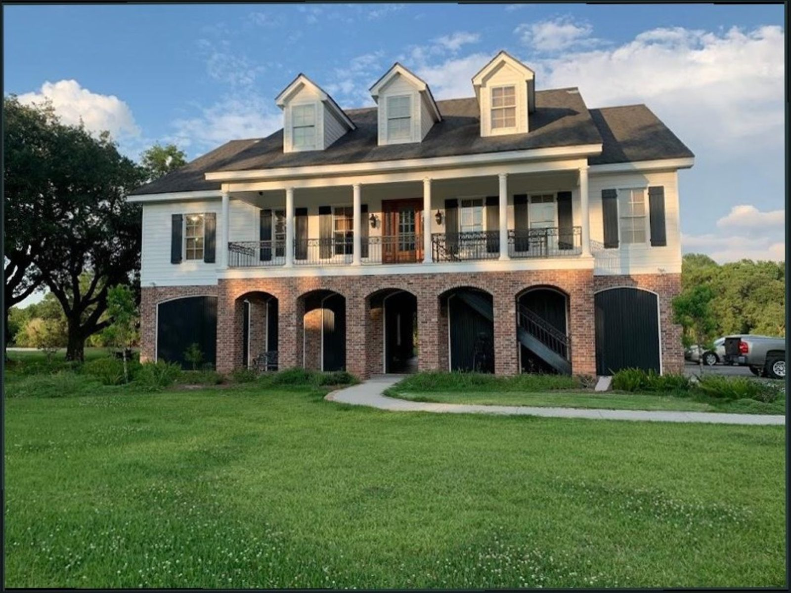

Town served
New shingles along a hip and ridge
Insert here: what was done on this job
Roofing contractor · Bunton Creek Rd, Kyle
Same day or next day bookings. Quotes explained simply. A tidy, organized crew.

Recent jobs
Town served

Town served

Town served

Town served

Town served

Town served
What we do
From a leaking vent to a full new roof, for homes in Kyle and nearby towns.
Leaks traced and fixed, like vent flashing that was not sealed correctly. Inspection fast, estimate to follow.
New shingles or an entire new roof, with the crew staying organized through the Texas heat.
Hail and wind damage found during inspection, with help through the insurance process.
Skylights sealed, repaired or replaced, with new flashing around them.
Fixing leaks, punctures and pooling water on flat roofs.
New gutters, chimney sealing and flashing repair around roof protrusions.
How a job runs
Ring for a same day or next day booking and tell us what you see.
We inspect, explain the problem in simple terms and send the estimate.
The crew works efficiently and keeps the site clean.
The finished roof is checked, and we walk you through what was done.
Straight from the customer
4.9114 Google reviews
I wanted to share a really great experience I had with a roofing company in Kyle. I called about a small roof leak around a bathroom exhaust vent that had been installed the wrong way by a handyman. Their roofing team came out that same afternoon, inspected the issue, and found that the gooseneck vent was not flashed and sealed correctly, which was letting water get into the roof area.
I’m very happy with the new roof installed on my home. Before the roofing work started, Preston met with my wife and me to go over our options, shingle choices, and pricing in a clear and helpful way. The estimate was competitive compared to other roofing contractors we spoke with, and we decided on architectural shingles for the best mix of looks and durability.
We had an issue with our skylight and reached out to have it inspected. During the roof inspection, they found that the skylight needed to be replaced and that our roof had hail damage and needed a full replacement too. The roofing team helped us through the whole insurance process and made everything easy from start to finish.

The crew
Henry & Sons Roof Repair is a Kyle-based roofing company at 110 Bunton Creek Rd. Local roofers, with same day or next day bookings.
We walk you through shingle choices and the estimate, and help with insurance after hail. Small leak repairs fit in between bigger jobs.
Everything in simple terms, and a quote that stays on target.
The new roof is checked carefully after installation.
An organized crew that works efficiently and keeps the site clean.
Find us
110 Bunton Creek Rd, Kyle, TX 78640
Call to book a same day or next day visit. We roof homes in Kyle and nearby.